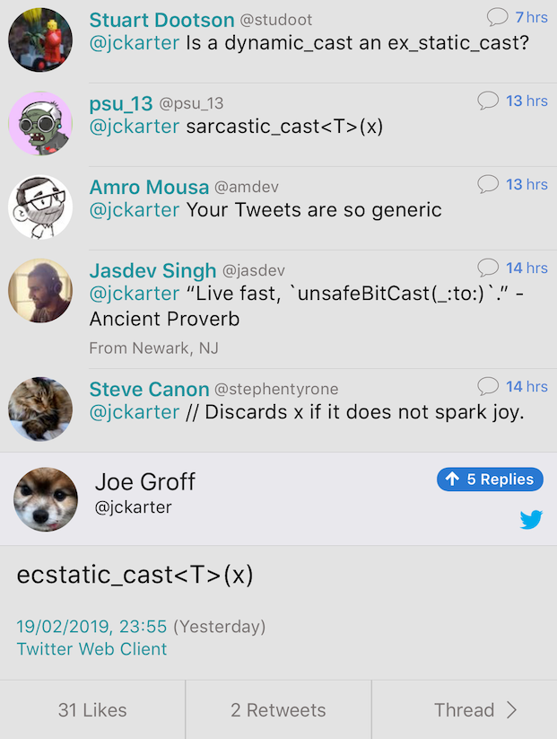

2019-06-27
Article | Code | Godbolt | Reddit
template <typename T>
concept Shape = requires(const T& t)
{
{ t.area() } -> float;
};
template <typename T>
struct Rectangle
{
Rectangle() { static_assert(Shape<T>); }
float area() const;
T base;
T height;
};template <typename T>
concept Shape = requires(const T& t)
{
{ t.area() } -> float;
};
template<class T>
struct ModelsShape
{
ModelsShape() requires(Shape<T>) = default;
};
struct Circle: ModelsShape<Circle>
{
float area() const;
float radius;
};Part of Intel One API Project. Based on C++14 and SYCL. Open Source. Developer Beta in 2019 Q4.
struct Callable {
void operator()(){count++;}
void operator()() const = delete;
int count = 0;
};
void f()
{
Callable counter;
std::function<void(void)> f = counter;
f();
const std::function<void(void) const> cf = counter;
// ^^
// error: implicit instantiation of undefined template
// 'std::__1::function<void () const>'
//
cf(); // Should not compile
}void f()
{
std::unique_ptr<int> up;
auto l=[up=std::move(up)](){};
std::function<void(void)> f1=l; // Error
std::function<void(void)> f2=std::move(l); // OK
}http://www.open-std.org/jtc1/sc22/wg21/docs/papers/2019/#mailing2019-06
https://www.reddit.com/r/cpp/comments/c3mup9/c_precologne_mailing/
http://www.open-std.org/jtc1/sc22/wg21/docs/papers/2019/p0939r3.pdf
https://www.reddit.com/r/cpp/comments/c3mes0/direction_for_iso_c_r3/
http://www.open-std.org/jtc1/sc22/wg21/docs/papers/2019/p1705r0.html
https://www.reddit.com/r/cpp/comments/c4548m/a_proposal_to_enumerating_core_undefined_behavior/
http://www.open-std.org/jtc1/sc22/wg21/docs/papers/2019/p1404r1.html
TL;DR: Throwing std::bad_alloc is not the same as "there is no heap space available" - in particular when dealing with custom allocators.
https://quuxplusone.github.io/blog/2019/06/26/pro-p1485/
https://stackoverflow.com/a/44244451/1424877
A function becomes a coroutine by having [a keyword such as
co_await,co_yield, orco_return] in its body. So [without close inspection of every line of the body] they are indistinguishable from functions.
http://www.open-std.org/jtc1/sc22/wg21/docs/papers/2019/p1485r1.html
https://www.reddit.com/r/cpp/comments/c5uu56/in_support_of_p1485_better_keywords_for_coroutines/
http://www.open-std.org/jtc1/sc22/wg21/docs/papers/2019/p0592r1.html
Must have:
Good to have:
